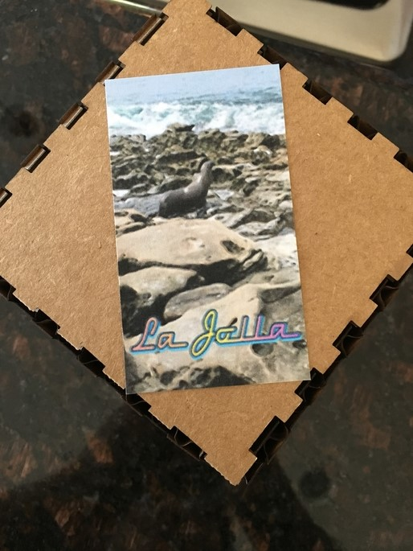
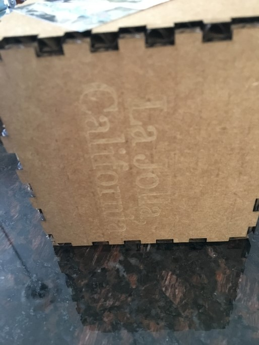

My task for this project was to make a puzzle. I leanred how to use the UV printer and got more familiar
with the laser machine. I designed by 12x12 puzzle on Fusion360. This was a pretty simple job, I created a 12x12 square
then individually designed each puzzle piece. I the saved the file as a DXL and used the Roland GS-24 CAMM1. I think
it is really cool having the ability to print what ever on anything. I printed a picture I took over the summr. It is a
picture of a seal laying on rocks in La Jolla, California. After the Roland printed the picture, I then used the
laser to cut out pieces and turn it into a puzzle.
For my second project of this unit, I cut out a box from Maker Case on the laser. I decided that I would use the
box to store my puzzle in. On the outside I have engraved, my name, 2017, summer, and La Jolla, California. I then
glued an image of my puzzle on the lid of the box.


My next task was to design a bookmark, I made it in Corel Draw. I chose to engrave my name and the year I graduate on an orange metal
bookmark. This project was probably the easiest, because it was just making a design. I used the laser to put
engravings on the bookmark.
The fourth project I chose to make a coaster. This technique involded using the laser cutter and rastering.
I selected a picture I took over the summer, of a sand castle. The image was not the best to use, becuase the
sandcastle does not stand out. I am hoping to find time to re-do this coster, but I learned when you raster,
it is best to have a contrasting picture, so the image comes out clear.
Lastly, I made a Press Fit Kit, this was one of the more challening projects. I had to create several different
shapes that interlock with eachother. I chose three basic shapes, circle, square, and pentagon. I used a caliper
to find the width of the cardboard, 1/8 the of an inch (0.125). I then inserted the shapes on Fusion 360. After
I inserted a shape, I made rectagles along the edges with a width of 0.125 and a length of 0.30 inches. I then
saved the design as a DXL file, so I would be able to insert it in Corel Draw. Later, I realized the process
probably would have been easier if I just designed it in Corel Draw.